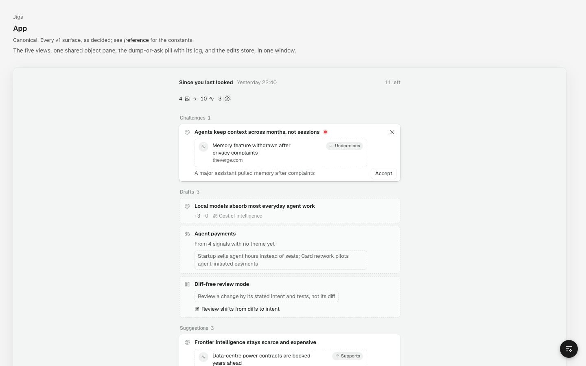

Proposed. Briefing is the first rail item and what Aber opens on: one column of what changed since you last looked. Built only from 00–06 and the decided navigation. Every row, peek, full view and dashed block below is 06's decided component; what's new here is the order, the grouping, how much shows before you click, and how deciding feels.
Today's Briefing is a stack of equal cards. Their decisions hide until you hover, and an X rejects them. On New signals that X throws away a whole theme's signals, and nothing can be undone.

/app?view=briefing at 1440. Source: app/web/src/ui/briefing-app.tsx and .css.| Where | What | Breaks |
|---|---|---|
| tsx:90, :55 | Reject is an X icon right of Accept, labelled "Discard (X)" even on suggestions; the X key rejects | 05 rule 6, DI-009 |
| tsx:39, :55 | On New signals, X runs discardSignal on every signal in the theme: it throws away a whole theme's signals at once | Signals are mine once filed |
| tsx:36–43 | Every decision is final; failures are swallowed by an empty catch {} | 05 rule 7, 10 rule 4 |
| css:50–52 | Accept and reject sit at opacity 0 until the item has the cursor | Decisions are the point of the page |
| css:23–24 | Every item is a raised card (radius 8, its own shadow); drafts are dashed but suggestions are solid, though both are "not yet mine" | 01 rule 8, 00 dashed |
| tsx:93, :107 | A red challenge dot and a jade new dot after titles | 06: no dots |
| css:25, tsx:92 | Bare 14px glyphs in ink 3 with no tile; merges and revisions put a verb icon in the type slot | 03 rules 3 and 9 |
| tsx:93, css:26–28 | Rephrase is a pencil that appears over the glyph on hover | 03 rule 8 |
| tsx:93, css:36 | A revision's title is the old claim struck through in ink 3 | 02 rule 3 |
| tsx:70–79, :28 | "Overnight" is a line of glyphs and numbers in ink 3 (4 → 10 3). Failed dumps aren't listed; work in progress is only in a tooltip | 10 rules 3 and 4 |
| tsx:20, :62 | New signals means every unseen signal ever, not since you last looked, and the header has no time | Briefing's purpose |
| tsx:23, :105–112 | Drafts come before suggestions; each theme is its own card with "N new" | Order by need |
| css:4–39 | Off-scale values: radii 5, 6, 8, 13; gaps 5, 7, 10; padding 10, 12, 28 | 01, 04 |
| tsx:64 | "All caught up." (with a full stop) and, in the jig, a 32px ink check badge | 10 rule 1 |
The default view on open: Briefing selected in the rail, no second sidebar. Accept, Dismiss and Discard work. Undo is in the toast or ⌘Z. Point at or click any row to peek it, and Open goes to its full view (06's window); Back or Briefing returns. Unfold a signal group, Unmerge a merged signal on hover, and Retry the dump that failed. Click into a decision and use J, K and A.
The same busy morning: 14 new signals from 7 dumps. Groups of three or fewer show their rows; bigger ones fold. Scroll to New signals.
Matches the Themes list. A signal filed in two themes shows under its first.
From its evidence, or the suggestion that would link it. The rest group under "No theory yet".
Accept or dismiss a few suggestions in each window.
The section count drops; when it reaches zero the section goes. ⌘Z works while the toast shows.
No toast. The trail clears the next time you open Briefing.
Both windows set unseen names in ink at 600 and clear one when you peek it. To see the difference, click Signals in the rail, then Briefing to come back.
Signals in an open group count as seen when you leave. Folded groups stay unseen.
A check on each group with unseen signals marks them all seen.
The same busy morning, with the challenges first. Read down a few decisions in each window: a challenge, a support, the new wording, the merge, a draft.
One pair to learn; the block's last sentence says what Accept does ("Accepting lowers confidence from 4 to 3").
Challenge: Keep confidence | Lower to 3. Evidence: Dismiss | Add evidence. Wording: Dismiss | Use wording. Merge: Keep apart | Merge. Draft: Discard | Keep. A still presses the right-hand button.
Added to RULES.md as "08 Briefing — PROPOSED".
Briefing is a full view of "since you last looked", the first rail item and what Aber opens on. It has no second sidebar (Navigation rule 2). Jig: 08-briefing/. 1. Head: the 32 newspaper tile, "Since yesterday", key line "Last looked 18:40", one summary sentence, the hairline, then sections (06 full-view anatomy, pane insets). 2. Order by need: Challenges, Suggestions, Drafts (decisions), then New signals, Dumps (news). Sections 32 apart, groups 16, items 8, a row and its block 4. 3. Decisions wait; news expires. Pending decisions stay until handled; signals and dumps are only what arrived since you last looked. 4. Summary before detail: one sentence counts what needs you and what arrived, names the busiest theme and any failure. Decisions show in full; a news group of three or fewer shows its rows, larger ones fold to label and count. 5. Grouped by the object a change touches: a theory's row, then its suggestion blocks; a challenge under the theory it trips. 6. Only 06 components: rows peek and open; challenge = theory row and tripwire line (the subject), then a dashed block of only the signal, the consequence and the buttons; suggestion = dashed block labelled by relation (Supports, Undermines, New wording, Merge with); draft = dashed block with provenance; automatic merge = one row naming both sources, Unmerge on hover. 7. Act in place: the buttons sit bottom right inside the dashed block they decide, always visible, acting on that block alone. Accept solidifies, then the item leaves; every decision has Undo (toast, ⌘Z). Keys J / K, A, O, ⌘Z; no key for Dismiss. 8. Seen is unread weight only: an unseen signal, and a folded group holding one, are ink at 600. Peek or open marks a signal seen. 9. Failures in words, first in Dumps, named in the summary, with Retry. Work in progress says Processing with the Working spinner. 10. Handled is quiet: empty sections go; "Nothing needs you." while news remains; "Nothing new since 18:40" with no key line when nothing is new. 11. Narrow: Briefing alone; the rail is a sheet from the left; the composer spans the window. Open: signals by theme (A) or by theory (B); a decided item leaves with Undo (A) or settles in place (B); a signal is seen once shown (A) or when read (B); buttons read Dismiss | Accept (A) or what they do (B, recommended).